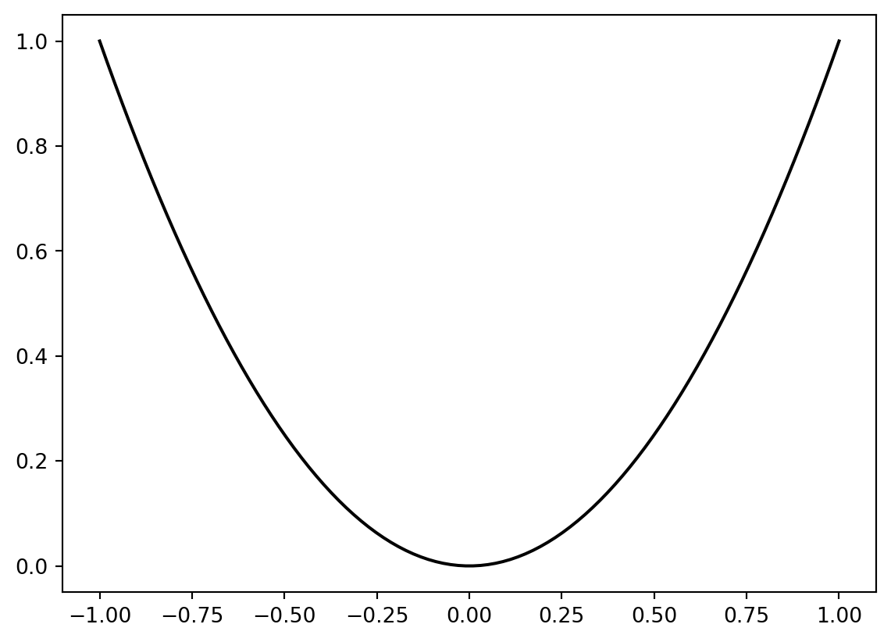
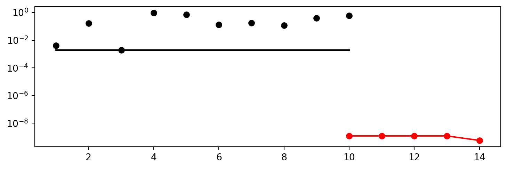
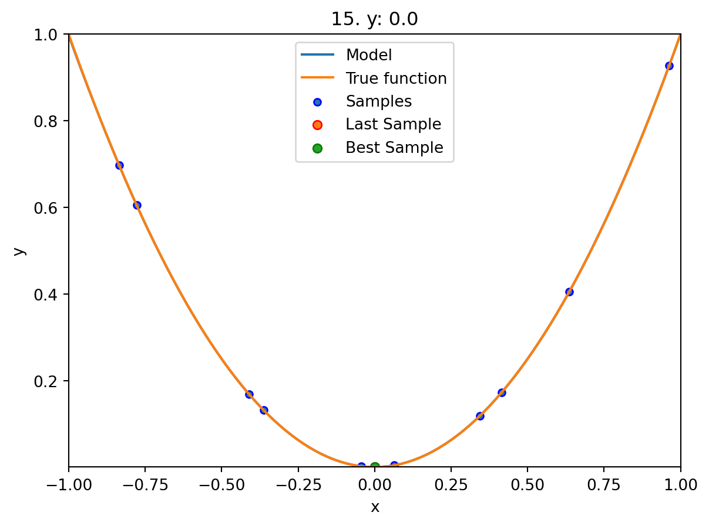
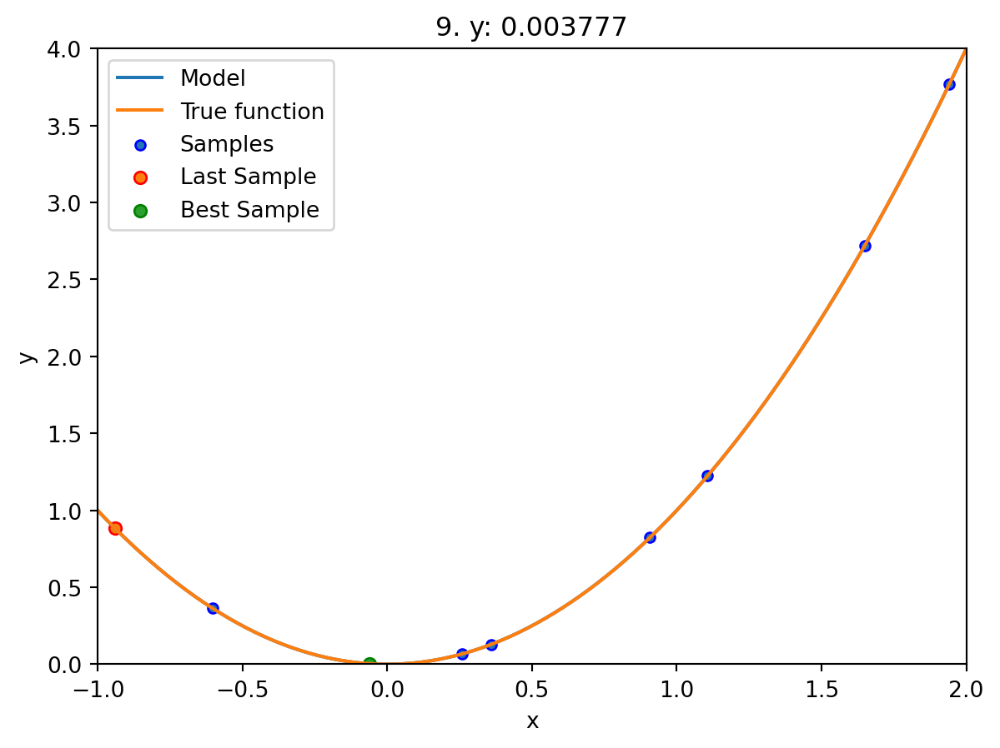
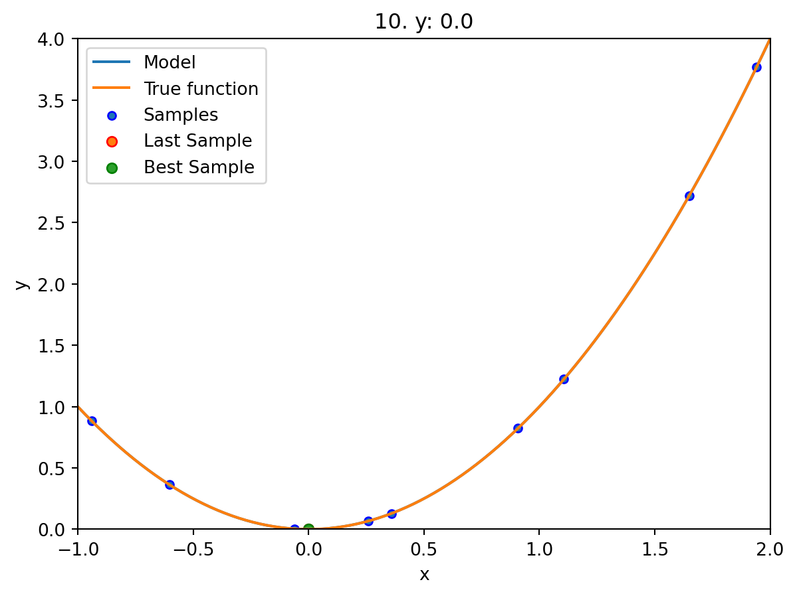
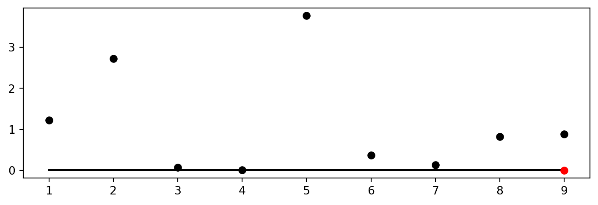

import numpy as np
from math import inf
from spotPython.fun.objectivefunctions import analytical
from spotPython.spot import spot
from scipy.optimize import shgo
from scipy.optimize import direct
from scipy.optimize import differential_evolution
import matplotlib.pyplot as plt1 Introduction: Hyperparameter Tuning
Hyperparameter tuning is an important, but often difficult and computationally intensive task. Changing the architecture of a neural network or the learning rate of an optimizer can have a significant impact on the performance.
The goal of hyperparameter tuning is to optimize the hyperparameters in a way that improves the performance of the machine learning or deep learning model. The simplest, but also most computationally expensive, approach uses manual search (or trial-and-error (Meignan et al. 2015)). Commonly encountered is simple random search, i.e., random and repeated selection of hyperparameters for evaluation, and lattice search (“grid search”). In addition, methods that perform directed search and other model-free algorithms, i.e., algorithms that do not explicitly rely on a model, e.g., evolution strategies (Bartz-Beielstein et al. 2014) or pattern search (Lewis, Torczon, and Trosset 2000) play an important role. Also, “hyperband”, i.e., a multi-armed bandit strategy that dynamically allocates resources to a set of random configurations and uses successive bisections to stop configurations with poor performance (Li et al. 2016), is very common in hyperparameter tuning. The most sophisticated and efficient approaches are the Bayesian optimization and surrogate model based optimization methods, which are based on the optimization of cost functions determined by simulations or experiments.
We consider below a surrogate model based optimization-based hyperparameter tuning approach based on the Python version of the SPOT (“Sequential Parameter Optimization Toolbox”) (Bartz-Beielstein, Lasarczyk, and Preuss 2005), which is suitable for situations where only limited resources are available. This may be due to limited availability and cost of hardware, or due to the fact that confidential data may only be processed locally, e.g., due to legal requirements. Furthermore, in our approach, the understanding of algorithms is seen as a key tool for enabling transparency and explainability. This can be enabled, for example, by quantifying the contribution of machine learning and deep learning components (nodes, layers, split decisions, activation functions, etc.). Understanding the importance of hyperparameters and the interactions between multiple hyperparameters plays a major role in the interpretability and explainability of machine learning models. SPOT provides statistical tools for understanding hyperparameters and their interactions. Last but not least, it should be noted that the SPOT software code is available in the open source spotPython package on github1, allowing replicability of the results. This tutorial descries the Python variant of SPOT, which is called spotPython. The R implementation is described in Bartz et al. (2022). SPOT is an established open source software that has been maintained for more than 15 years (Bartz-Beielstein, Lasarczyk, and Preuss 2005) (Bartz et al. 2022).
This document is structured as follows. The concept of the hyperparameter tuning software spotPython is described in Section 1.1. Chapter 12 describes the execution of the example from the tutorial “Hyperparameter Tuning with Ray Tune” (PyTorch 2023). The integration of spotPython into the PyTorch training workflow is described in detail in the following sections. Section 12.1 describes the setup of the tuners. Section 12.3 describes the data loading. Section 12.5 describes the model to be tuned. The search space is introduced in Section 12.5.3. Optimizers are presented in Section 12.6.1. How to split the data in train, validation, and test sets is described in Section 12.7.1. The selection of the loss function and metrics is described in Section 12.7.5. Section 12.8.1 describes the preparation of the spotPython call. The objective function is described in Section 12.8.2. How to use results from previous runs and default hyperparameter configurations is described in Section 12.8.3. Starting the tuner is shown in Section 12.8.4. TensorBoard can be used to visualize the results as shown in Section 12.9. Results are discussed and explained in Section 12.10.
Chapter 17 shows the integration of spotPython into the PyTorch Lightning training workflow.
Section 12.11 presents a summary and an outlook.
Note
The corresponding .ipynb notebook (Bartz-Beielstein 2023) is updated regularly and reflects updates and changes in the spotPython package. It can be downloaded from https://github.com/sequential-parameter-optimization/spotPython/blob/main/notebooks/14_spot_ray_hpt_torch_cifar10.ipynb.
1.1 The Hyperparameter Tuning Software SPOT
Surrogate model based optimization methods are common approaches in simulation and optimization. SPOT was developed because there is a great need for sound statistical analysis of simulation and optimization algorithms. SPOT includes methods for tuning based on classical regression and analysis of variance techniques. It presents tree-based models such as classification and regression trees and random forests as well as Bayesian optimization (Gaussian process models, also known as Kriging). Combinations of different meta-modeling approaches are possible. SPOT comes with a sophisticated surrogate model based optimization method, that can handle discrete and continuous inputs. Furthermore, any model implemented in scikit-learn can be used out-of-the-box as a surrogate in spotPython.
SPOT implements key techniques such as exploratory fitness landscape analysis and sensitivity analysis. It can be used to understand the performance of various algorithms, while simultaneously giving insights into their algorithmic behavior. In addition, SPOT can be used as an optimizer and for automatic and interactive tuning. Details on SPOT and its use in practice are given by Bartz et al. (2022).
A typical hyperparameter tuning process with spotPython consists of the following steps:
- Loading the data (training and test datasets), see Section 12.3.
- Specification of the preprocessing model, see Section 12.4. This model is called
prep_model(“preparation” or pre-processing). The information required for the hyperparameter tuning is stored in the dictionaryfun_control. Thus, the information needed for the execution of the hyperparameter tuning is available in a readable form. - Selection of the machine learning or deep learning model to be tuned, see Section 12.5. This is called the
core_model. Once thecore_modelis defined, then the associated hyperparameters are stored in thefun_controldictionary. First, the hyperparameters of thecore_modelare initialized with the default values of thecore_model. As default values we use the default values contained in thespotPythonpackage for the algorithms of thetorchpackage. - Modification of the default values for the hyperparameters used in
core_model, see Section 12.6.0.1. This step is optional.- numeric parameters are modified by changing the bounds.
- categorical parameters are modified by changing the categories (“levels”).
- Selection of target function (loss function) for the optimizer, see Section 12.7.5.
- Calling SPOT with the corresponding parameters, see Section 12.8.4. The results are stored in a dictionary and are available for further analysis.
- Presentation, visualization and interpretation of the results, see Section 12.10.
1.2 Spot as an Optimizer
The spot loop consists of the following steps:
- Init: Build initial design \(X\)
- Evaluate initial design on real objective \(f\): \(y = f(X)\)
- Build surrogate: \(S = S(X,y)\)
- Optimize on surrogate: \(X_0 = \text{optimize}(S)\)
- Evaluate on real objective: \(y_0 = f(X_0)\)
- Impute (Infill) new points: \(X = X \cup X_0\), \(y = y \cup y_0\).
- Got 3.
Central Idea: Evaluation of the surrogate model S is much cheaper (or / and much faster) than running the real-world experiment \(f\). We start with a small example.
1.3 Example: Spot and the Sphere Function
1.3.1 The Objective Function: Sphere
The spotPython package provides several classes of objective functions. We will use an analytical objective function, i.e., a function that can be described by a (closed) formula: \[f(x) = x^2\]
fun = analytical().fun_sphereWe can apply the function fun to input values and plot the result:
x = np.linspace(-1,1,100).reshape(-1,1)
y = fun(x)
plt.figure()
plt.plot(x, y, "k")
plt.show()
spot_0 = spot.Spot(fun=fun,
lower = np.array([-1]),
upper = np.array([1]))spot_0.run()<spotPython.spot.spot.Spot at 0x17ee209a0>spot_0.print_results()min y: 3.696886711914087e-10
x0: 1.922728975158508e-05[['x0', 1.922728975158508e-05]]spot_0.plot_progress(log_y=True)
spot_0.plot_model()
1.4 Spot Parameters: fun_evals, init_size and show_models
We will modify three parameters:
- The number of function evaluations (
fun_evals) - The size of the initial design (
init_size) - The parameter
show_models, which visualizes the search process for 1-dim functions.
The full list of the Spot parameters is shown in the Help System and in the notebook spot_doc.ipynb.
spot_1 = spot.Spot(fun=fun,
lower = np.array([-1]),
upper = np.array([2]),
fun_evals= 10,
seed=123,
show_models=True,
design_control={"init_size": 9})
spot_1.run()

<spotPython.spot.spot.Spot at 0x17ef14040>1.5 Print the Results
spot_1.print_results()min y: 3.6779240309761575e-07
x0: -0.0006064589047063418[['x0', -0.0006064589047063418]]1.6 Show the Progress
spot_1.plot_progress()